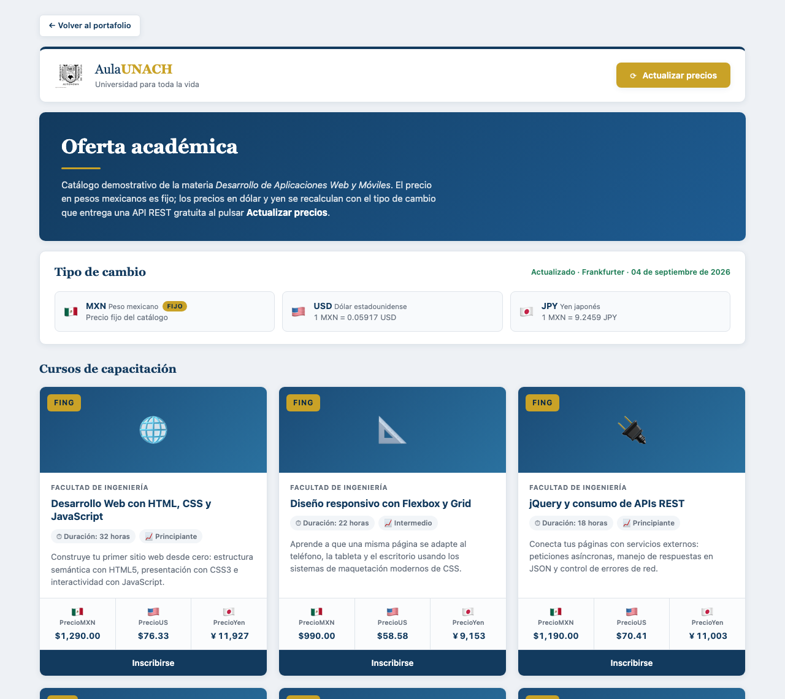
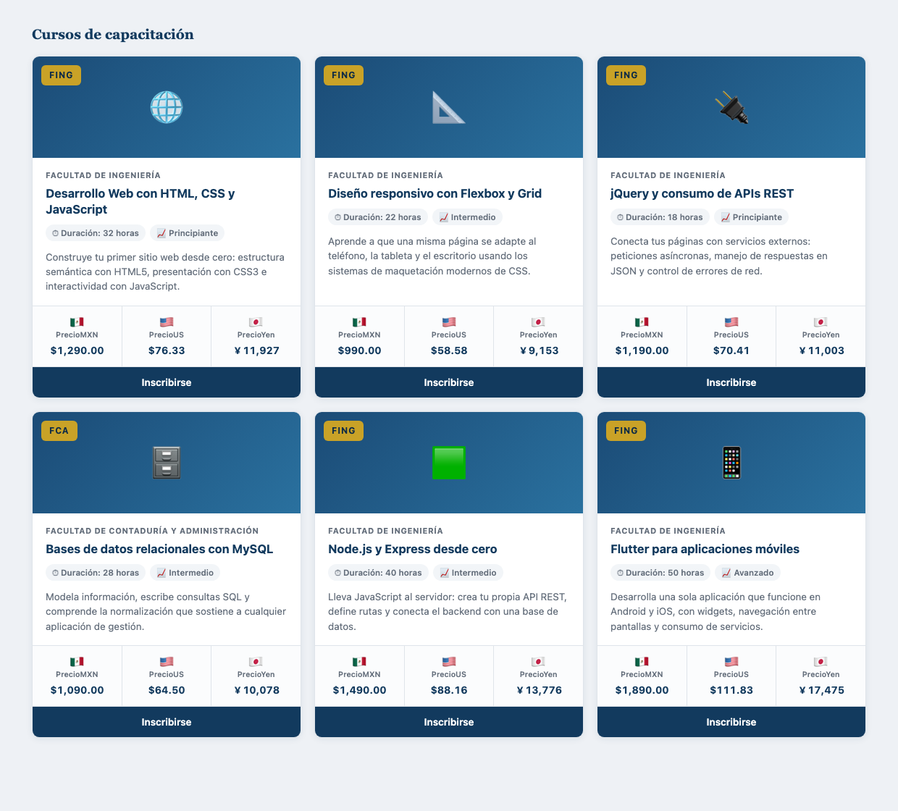
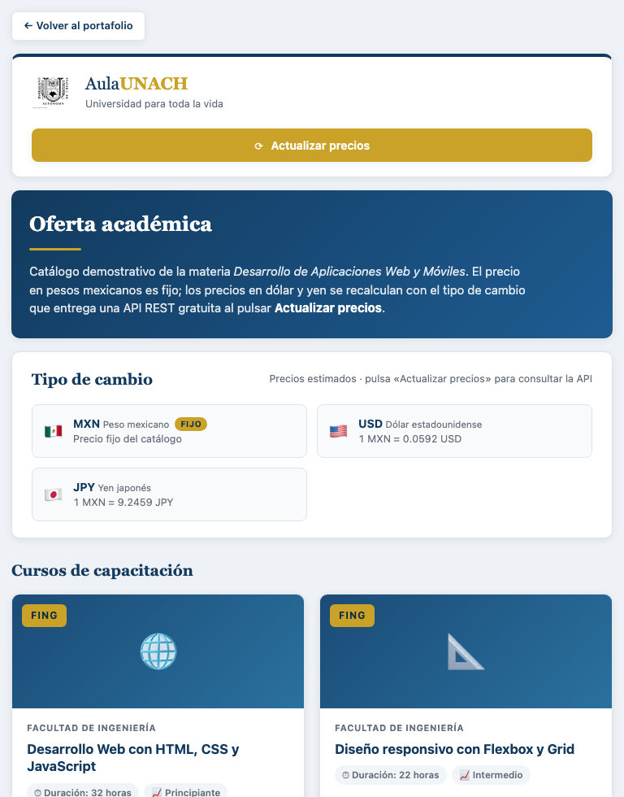
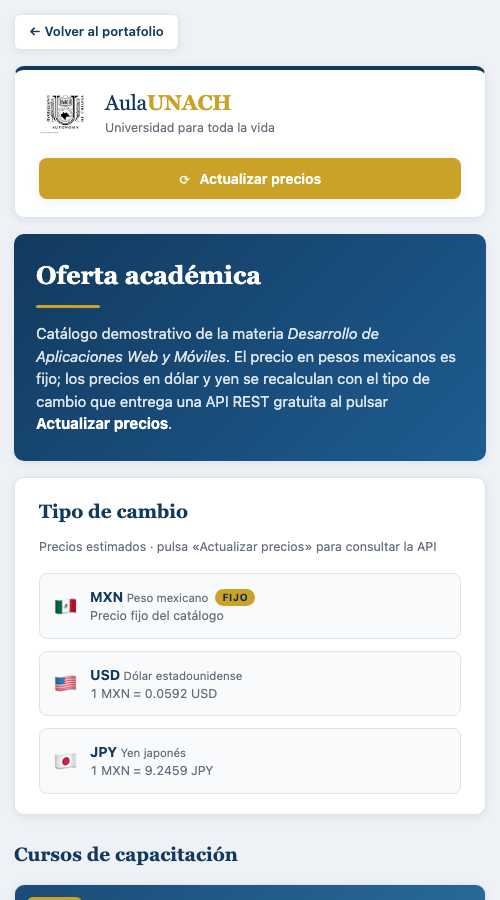
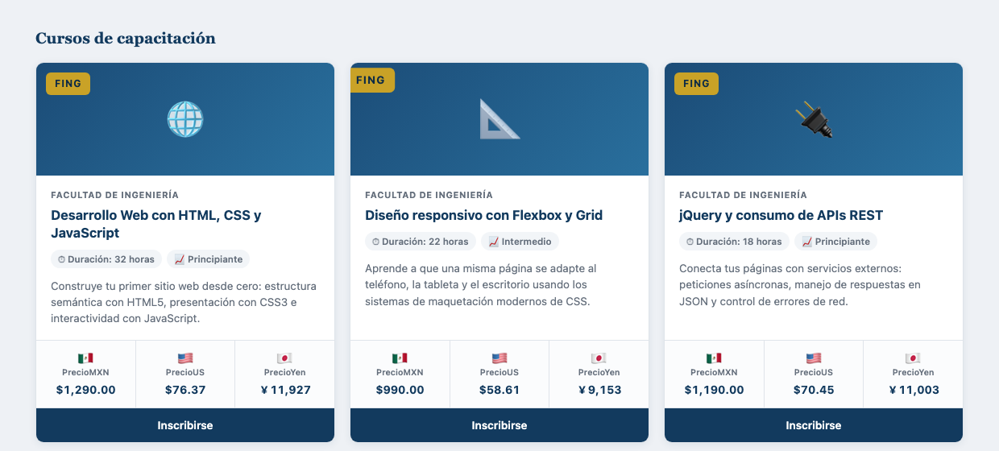
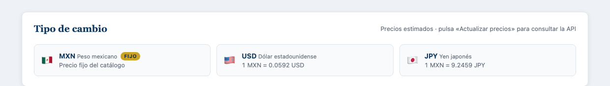
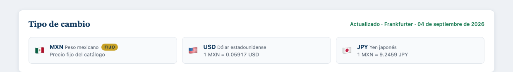

Escuela de Tecnologías Digitales Aplicadas · Campus IV
Desarrollo de Aplicaciones Web y Móviles
Práctica: Desarrollar una aplicación web SPA Responsiva
Reporte de práctica
Alumno
Ezequiel Peña Mazariegos
Matrícula
100017097
Semestre y grupo
7.º semestre · Grupo A
Docente
Dr. Christian Mauricio Castillo Estrada
Tuxtla Gutiérrez, Chiapas · 5 de septiembre de 2026
1. Objetivo
Desarrollar una aplicación web bajo el estilo arquitectónico SPA
(Single Page Application) con diseño responsivo, que presente la
oferta académica de una institución mediante un conjunto de tarjetas,
tomando como referencia la plataforma gubernamental SaberesMX. La aplicación
debe mostrar el precio de cada curso en tres monedas, obteniendo el tipo de
cambio desde una API REST.
La aplicación se encuentra publicada en GitHub Pages, servicio
de hospedaje de sitios estáticos. El sitio se sirve por HTTPS y se actualiza
automáticamente con cada versión enviada al repositorio, por lo que el
código publicado y el que se ejecuta en línea son siempre el mismo.
3. Tecnologías utilizadas
Tecnología
Función dentro del proyecto
HTML5
Estructura semántica de la página única (SPA).
CSS3
Presentación, rejilla responsiva con CSS Grid, media queries y el efecto de ampliación en las imágenes.
JavaScript / jQuery 3.7.1
Generación dinámica de las tarjetas, petición a la API REST y recálculo de precios.
API REST Frankfurter
Tipo de cambio oficial del Banco Central Europeo. Servicio gratuito y sin llave de acceso.
API REST ExchangeRate-API
Servicio de respaldo, empleado si el principal no responde.
Git y GitHub Pages
Control de versiones y publicación del sitio.
4. Estructura del proyecto
portafolio-dawm/
├── index.html Portada del portafolio de la materia
├── assets/ Recursos compartidos (CSS, JS, imágenes)
└── actividades/
└── 02-cursos-monedas/ Aplicación de esta práctica
├── index.html Página única (SPA)
├── css/estilos.css Estilos y diseño responsivo
└── js/
├── cursos.js Datos de los 6 cursos (precio fijo en MXN)
└── app.js Conexión a la API y dibujado de la interfaz
La aplicación es una SPA: toda la interfaz se resuelve en un solo documento
index.html. No existe navegación entre páginas; el contenido se
genera y se actualiza en el mismo documento mediante JavaScript.

Figura 1. Vista general de la aplicación en escritorio, con los precios ya actualizados desde la API.
5. Requerimiento funcional 1
Rejilla responsiva con seis tarjetas de cursos. Se crearon
seis fichas; cada una incluye logo, título, descripción y botón de inscripción.
Conforme al requerimiento, el botón no tiene ninguna acción programada.
El acomodo automático se resuelve con CSS Grid. La propiedad
auto-fill calcula cuántas columnas caben en el ancho disponible y
minmax(280px, 1fr) impide que una tarjeta se angoste más de 280 px:
De esta forma la rejilla pasa de cuatro columnas en escritorio a tres, dos y
finalmente una sola en teléfono, sin necesidad de fijar la cantidad de columnas
en cada resolución. Se añadieron media queries en 1024 px, 860 px y
520 px para ajustar márgenes y tipografía.

Figura 2. Las seis fichas de cursos acomodadas en tres columnas (1240 px). Cada una presenta logo, título, descripción y botón de inscripción.
6. Diseño responsivo
Se verificó el comportamiento de la rejilla en tres resoluciones. En cada
una se comprobó además que el ancho del documento no excediera el de la
ventana, es decir, que no se produjera desplazamiento horizontal.

Figura 3. Tableta (768 px): dos columnas.

Figura 4. Teléfono (500 px): una columna.
7. Requerimiento funcional 2
Ampliación de la imagen al posicionar el cursor. Al colocar
el puntero sobre la imagen del curso, esta aumenta un 10 % su tamaño mediante
una transformación de CSS. El contenedor recorta el excedente con
overflow: hidden, de modo que la tarjeta conserva sus dimensiones
y el resto de la rejilla no se desacomoda:
.tarjeta-portada {
height: 140px;
overflow: hidden; /* recorta la imagen cuando se agranda */
}
.portada-imagen {
transition: transform 0.35s ease;
}
.tarjeta-portada:hover .portada-imagen {
transform: scale(1.1); /* 10 % mas grande */
}

Figura 5. La tarjeta central tiene el cursor encima: su imagen se muestra ampliada al 110 % respecto de las laterales.
8. Requerimiento funcional 3
Actualización de precios contra una API REST. El precio en
pesos mexicanos es un valor fijo del catálogo, definido en
js/cursos.js. Al pulsar el botón Actualizar precios se
realiza la petición al servicio de tipo de cambio y se recalculan únicamente
las monedas extranjeras: dólar estadounidense y yen japonés.
Ambos servicios son gratuitos y no requieren llave de acceso. El código
consulta el principal y, si la petición falla, recurre automáticamente al de
respaldo; si tampoco responde, conserva tasas de referencia y advierte al
usuario que no hubo conexión.
El formato de cada cantidad se resuelve con Intl.NumberFormat,
que aplica el símbolo, el separador de miles y la cantidad de decimales que
corresponden a cada moneda; por ello el yen se presenta sin decimales.

Figura 6. Estado inicial: la aplicación muestra tasas de referencia e indica que debe pulsarse el botón.

Figura 7. Después de pulsar Actualizar precios: se confirma la fuente y la fecha del tipo de cambio obtenido.
9. Conclusiones
La práctica permitió aplicar CSS Grid como mecanismo de maquetación
responsiva y comprobar que auto-fill con minmax()
resuelve el acomodo de las tarjetas sin declarar la cantidad de columnas para
cada resolución, lo que reduce considerablemente el número de
media queries necesarias.
En cuanto al consumo del servicio externo, se identificó la conveniencia de
prever la falla de la API: una aplicación que depende de un servicio de
terceros debe seguir siendo utilizable cuando este no responde. Por ello se
implementó un servicio de respaldo y un conjunto de tasas de referencia, con
un aviso explícito al usuario sobre el origen de los datos que está viendo.
Finalmente, separar los datos de los cursos (cursos.js) de la
lógica de la interfaz (app.js) facilitó modificar el catálogo sin
tocar el código de presentación, criterio que se conservará en las siguientes
actividades del portafolio.